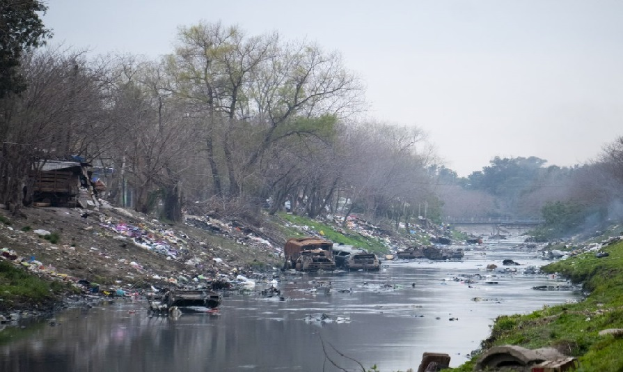
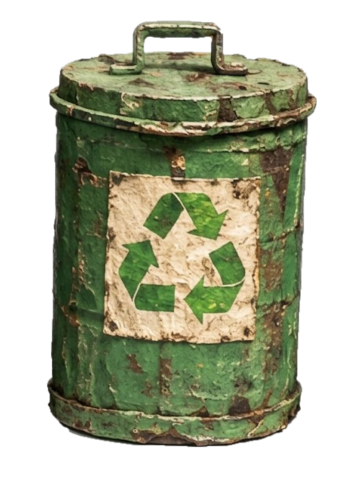
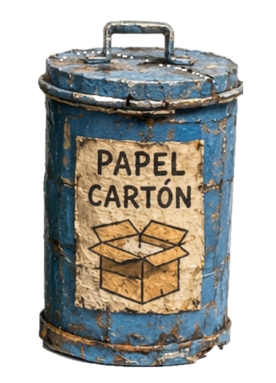
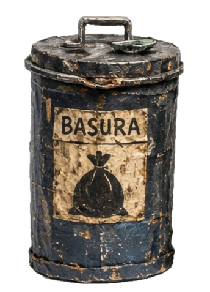
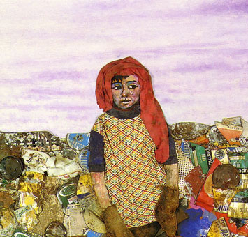

JUANITO LAGUNA
EL PROYECTO
Este proyecto nace de una mirada crítica sobre el entorno que habitamos y el impacto de nuestra basura en los espacios naturales. El juego propone una experiencia donde la acción de pescar no busca el sustento, sino la restauración de un paisaje profundamente marcado por el desecho industrial y el olvido.

CÓMO JUGAR
A través de una interfaz inspirada en la técnica de collage de Antonio Berni, el jugador debe clasificar los residuos recolectados del lago. El desafío es preciso: cada elemento tiene un lugar.
- Tacho Azul (Papel y Cartón): Destinado a diarios, revistas y cajas de cartón limpias.
- Tacho Verde (Reciclables): Reservado para plásticos, vidrios y materiales recuperables.
- Tacho Negro (Basura): Para residuos que no pueden ser reciclados o estan rotos.
¡Cuidado: si te equivocas, el lago se contamina!



¿QUIÉN ES JUANITO LAGUNA?
Juanito Laguna es un personaje creado por el artista argentino Antonio Berni en la década de 1950. Representa a los niños de los barrios humildes, que viven a orillas de los grandes centros urbanos, rodeados de los restos de la sociedad de consumo.
Para Berni, Juanito no era solo un niño, sino una denuncia social.

PROCESO DE CREACIÓN